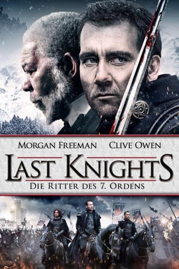
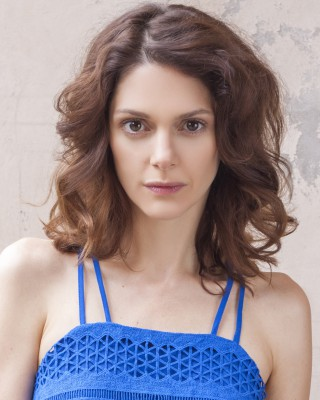

#4375 Last Knights - Die Ritter des 7. Ordens
Alternativ: Last Knights
 
 IMDB-Wertung: 6.2 / 10
IMDB-Wertung: 6.2 / 10  Metascore: 0
Metascore: 0 
Raiden ist ein mittelloser Kommandant, der in seinem geschätzten Meister Lord Bartok eine Art Vaterfigur gefunden hat. Der ehrenwerte Bartok gehört zu den wenigen, die es wagen, sich gegen den namenlosen, die Bevölkerung unterdrückenden Herrscher des Landes aufzulehnen. Als er sich jedoch weigert, vor dessen sadistischen Gefolgsmann Gezza Mott auf die Knie zu gehen, wird er prompt gefangen genommen. Raiden wird daraufhin gezwungen, seinen Gebieter zu exekutieren und fortan ein Leben als Geächteter zu führen. Der gefallene Ritter ist auf Rache aus und versammelt eine Schar ehrloser Krieger um sich, um den finsteren Machenschaften des Feindes ein Ende zu bereiten. Gemeinsam schmieden sie einen Plan, um die uneinnehmbare Festung von Gezza Mott zu stürmen.
Jahr: 2015
Dauer: 115 Minuten
FSK:
Land: Studio: Wild BunchTonspuren: DTS-HD - ,
Untertitel: Deutsch,
Auflösung: 1080p (1920x800) Größe: 11059 MB
Genre: Action, Abenteuer
Regisseur: Kazuaki Kiriya
Drehbuch: Gideon Defoe
Soundtrack:
Darsteller:
 Clive Owen als Raiden
Clive Owen als Raiden Morgan Freeman als Bartok
Morgan Freeman als Bartok Cliff Curtis als Lt. Cortez
Cliff Curtis als Lt. Cortez Aksel Hennie als Geza Mott
Aksel Hennie als Geza Mott- Tsuyoshi Ihara als Ito
- Sung-kee Ahn als Auguste
- Peyman Moaadi als Emperor
- Si-Yeon Park als Hannah
- Noah Silver als Gabriel
 Ayelet Zurer als Naomi
Ayelet Zurer als Naomi- Giorgio Caputo als Slim Tully
 James Babson als Fat Jim
James Babson als Fat Jim Shohreh Aghdashloo als Maria
Shohreh Aghdashloo als Maria- Michael Lombardi als Josiah
 Daniel Adegboyega als Rodrigo
Daniel Adegboyega als Rodrigo Dave Legeno als Olaf
Dave Legeno als Olaf- Val Lauren als Shimon
 Lee Ingleby als Messenger
Lee Ingleby als Messenger- Peter Hosking als Accountant
- Anna Linhartová als Amy
- Nigel Gore als Second Counsel
 Pavel Kríz als Doctor
Pavel Kríz als Doctor Brian Caspe als Spy 1
Brian Caspe als Spy 1- Tatiana Evonuk als Bath House girl
-  Klára Issová als Lt. Cortez's Wife
- Rose Caton als Lilly
- Robert Russell als First Counsel
- Dan Brown als Thomas
- Chris Consilvio als Corrupt Nobleman
- Booda als Merchant
- Tomás Havlík als Geza Mott's Secretary
- Michael Pavlik als Tower Guard
- Leo Stransky als Bandit Leader
- Petr Kotík als Bridge Guard 1
- Zoran Kovacevic als Guard
- Patrik Plesinger als Drinking Opponent
- Zdenek Astr als Executioner
- Rod Grover als Slum Lord
- Michal Maler als Young Soldier
- Václav Chalupa als Gambler 2
- Libor Mika als Lead Guard
- Petr Bozdech als Shimon's Man
- Radek Bruna als Rodrigo's Man
- Zdenek Dvoracek als Raiden's / Olaf's Man
- Rene Hajek als Josia's Man
- Karel Hartl als Rodrigo's Man
- Jiri Horky als Josia's Man
- Petr Kadlec als Shimon's Man
- Roman Kracik als Goon
- Petr Kucera als Josia's Man
Datei: X:\2015(G-M)\Last Knights - Die Ritter des 7. Ordens (2015, FSK, 1920x800).mkv seit 13.09.2016
Festplatte: HD 2015(A-Z)
 Es gibt insgesamt 129 Filme in der Gruppe '2015(G-M)'
Es gibt insgesamt 129 Filme in der Gruppe '2015(G-M)'